Next: Exercises Up: Evaluation of the indeterminate Previous: Evaluation of the indeterminate Contents Index
Differentiate the numerator for a new numerator and the denominator for a new denominator13.5The value of this new fraction for the assigned value13.6of the variable will be the limiting value of the original fraction.
In case it so happens that
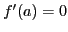 and 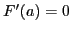,
that is, the first derivatives also vanish for  , then we
still have the indeterminate form
, then we
still have the indeterminate form
 , and the theorem can be
applied anew to the ratio
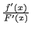
giving us
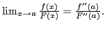
When also
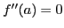 and
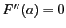, we get in the same manner
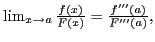
and so on.
, and the theorem can be
applied anew to the ratio
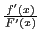
giving us
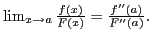
When also
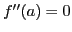 and
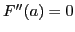, we get in the same manner
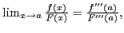
and so on.
It may be necessary to repeat this process several times.
Solution.
Solution.